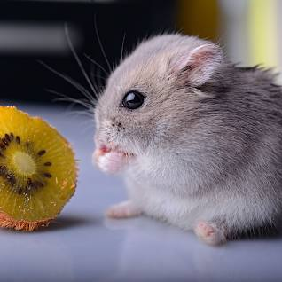

Hamster

Hamsters are small rodents known for their compact size, cheek pouches, and popularity as pets.
Physical Characteristics
- Size: Hamsters are typically small, with adult sizes ranging from 2 to 6 inches.
- Coat: They have soft fur with various colors and patterns, depending on the species.
- Cheek Pouches: Hamsters have expandable cheek pouches that they use to store food and carry it to their nests.
Behavior and Habitat
- Habitat: Hamsters are native to arid regions of Europe, Asia, and the Middle East.
- Nocturnal Behavior: They are primarily nocturnal, being more active during the night.
- Burrowing Instincts: Hamsters are skilled burrowers and create elaborate underground tunnels for shelter and nesting.
Diet
Hamsters are omnivores with a diet that includes seeds, grains, fruits, vegetables, and occasionally insects.
Popularity as Pets
Hamsters are popular pets due to their small size, relatively low maintenance, and variety of species available.
Interesting Facts
- Reproduction: Hamsters are known for their rapid reproductive rate and can have several litters in a single year.
- Hibernation: Some hamster species can enter a state of hibernation in response to cold temperatures.
- Pouch Expansion: Hamsters' cheek pouches can stretch to several times the size of their heads.